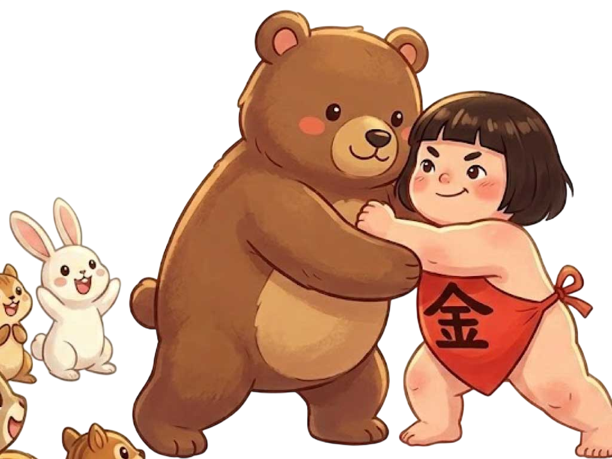

― 足柄山とは ―
足柄山は、古来より東国と西国を隔てる境界であり、交通と軍事の最大の要衝でした。 ここには日本武尊（ヤマトタケル）の伝説が色濃く残っていますが、一方で彼が実際には別の道を通ったとする説も根強く存在します。しかし重要なのは、真偽がどうあれ、人々がこの険しい峠に「英雄の伝説」を重ね、語り継いできたという事実です。 この地は、歴史の中で独自の神話的地位を築き上げてきたのです。
第二章：山の王と動物たちの稽古（交流）
少し大きくなると、金太郎は山の動物たちのリーダーになりました。
赤い腹掛けひとつで、自分よりも大きなクマを相手に相撲の稽古に励みます。

「のこった、のこった！」とウサギやシカが応援する中、金太郎の笑い声が山中に響き渡りました。彼は強いだけでなく、 小さな命を愛する優しい心を持っていました。